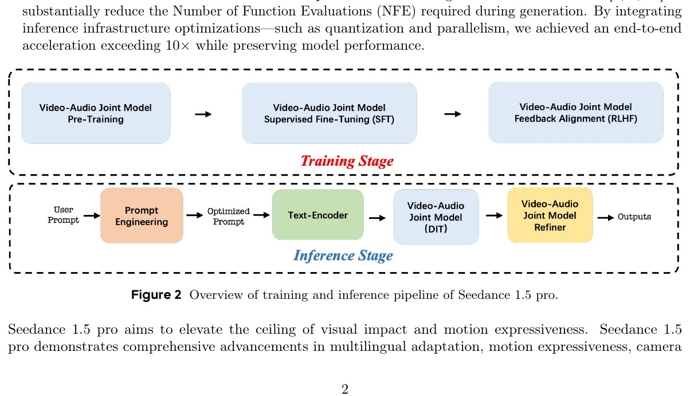
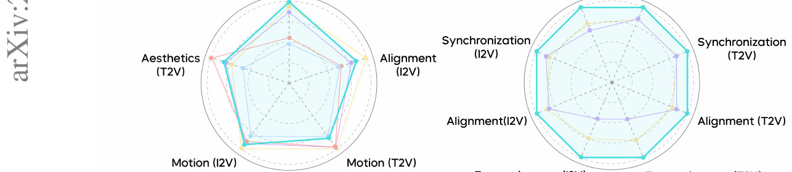
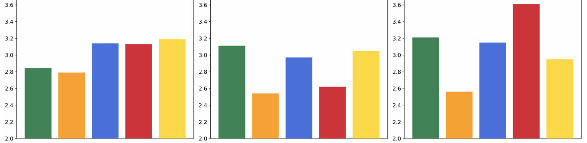
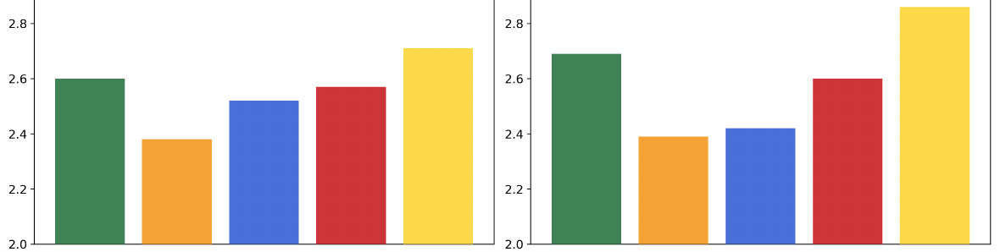
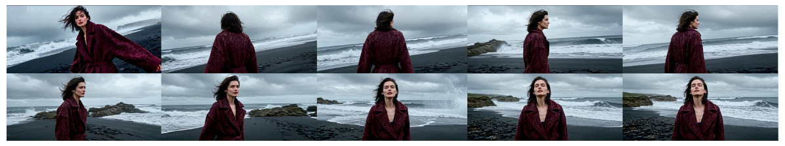

速览
五条要点
原生音画联合，一个模型四种任务
双分支 DiT（基于 MMDiT）加跨模态 joint module，同时出视频和音频；同一套权重覆盖 T2VA、I2VA，以及纯视频的 T2V、I2V。摘要 · §1
数据框架被列为第一项技术贡献
多阶段 curation，优先保证音画一致和运动表现力，按课程式调度喂数据；caption 系统对视频和音频两种模态都写专业级描述。没有任何规模数字。§1
后训练 + 加速
高质量音视频 SFT → 面向音视频定制的 RLHF（多维 reward：运动、美学、音频保真），RLHF 训练提速近 3×；多阶段蒸馏 + 量化并行，端到端推理加速 >10×。§1
T2V 指令遵循小幅领先，I2V 落后 Veo 3.1
T2V Prompt Following ≈3.11，Veo 3.1 ≈3.05；I2V 两项均低于 Veo 3.1（Motion ≈2.60 对 2.71，Prompt ≈2.69 对 2.86）。音频 GSB 对 Kling 2.6 的 Expressiveness 偏好约 60%。图 3/4/5 读图
读之前先降预期
9 页正文里没有参数量、数据量、超参、消融；评测只在未公开的内部集上做人评，且只有图、没有数值表。它更像产品能力说明，而不是可复现的技术报告。全文
架构：双分支 DiT + 跨模态 joint module
原文只有一张训练 / 推理流程总览图，没有网络结构图。

原文明确给出的结构信息
- 骨干：dual-branch Diffusion Transformer，含 cross-modal joint module。摘要
- 框架：基于 MMDiT [1] 的统一框架，目标是“深度跨模态交互”，保证音画时间同步和语义一致。§1
- 推理链路多了两个外挂环节：前置
Prompt Engineering（把用户 prompt 改写成 optimized prompt），后置Refiner（音视频联合）。图 2 - I2V 场景：音频生成以参考图中的视觉线索为条件（这句出现在评测标注方法里）。§2.1.1
相对 Seedance 1.0 的变化
最大的变化是从纯视频变成原生音画联合：新增音频分支、跨模态 joint module，以及配套的音频 caption、音频评测维度。原文没有逐项对比 1.0 的结构（例如是否沿用 1.0 的 VAE、文本编码器），这里不做推测。§1
数据：被列为第一贡献，但只有定性描述
原文关于训练数据的全部信息在 §1 的一段 bullet 里；评测数据（SeedVideoBench 1.5）的标签体系反而写得更细。
多阶段 curation pipeline §1
pipeline 优先保证三件事：
- video–audio coherence：音画一致性
- motion expressiveness：运动表现力
- curriculum-based data scheduling：课程式数据调度
各阶段的具体过滤器、阈值、过滤掉的比例：原文未披露
Captioning 系统 §1
为视频和音频两种模态分别提供 “rich, professional-grade descriptions”。
caption 模型、caption 格式、长度、是否结构化、是否包含台词 / 方言标注：原文未披露
从评测标签可以反推 caption 至少需要覆盖的维度：人声类型（说话 / 唱歌 / 笑声等非语言发声）、音色、口音、情绪、音效来源、音乐风格（见下方评测标签表，§2.1.1）。这是推断，不是原文对 caption 的描述。
数据基建 §1
“efficient engineering infrastructure optimized for massive multi-modal data processing”。吞吐、存储、处理时长：原文未披露
各阶段用的数据 §1
- 预训练：large-scale mixed-modality datasets，多任务（T2VA / I2VA / T2V / I2V）
- SFT：high-quality audio-video datasets
- RLHF：多维 reward model 打分；prompt 集来源原文未披露
已披露规模
| 项目 | 原文信息 | 来源 |
|---|---|---|
| 预训练视频 / 音频总量（条数、时长） | 原文未披露（仅称 large-scale） | §1 |
| 音画配对 vs 纯视频数据比例 | 原文未披露（仅称 mixed-modality） | §1 |
| 各任务（T2VA / I2VA / T2V / I2V）配比 | 原文未披露 | §1 |
| 语言 / 方言分布 | 原文未披露（能力描述提到四川话、台湾腔普通话、粤语、上海话） | §2.2 |
| 课程阶段数与切换条件 | 原文未披露 | §1 |
| SFT 数据量与筛选标准 | 原文未披露（仅称 high-quality） | §1 |
| 合成数据 | 原文未提及 | 全文 |
| SeedVideoBench 1.5 条数 | 原文未披露 | §2.1 |
没有任何比例数字，因此本节不画配比条形图。
评测数据：SeedVideoBench 1.5 的标签体系
在 1.0 版“基于真实用户 prompt”构建的基础上，1.5 版扩充了行业场景（广告、微短剧），并新增音频维度。标签由专业导演参与制定，影视制作、摄影、设计领域专家打分。§2.1
| 维度 | 标签内容 | 来源 |
|---|---|---|
| 视频 | ||
| 核心标签 | 主体、运动动态、交互、运镜 | §2.1.1 |
| 应用场景 | 广告、社交媒体内容、短叙事内容 | §2.1.1 |
| 音频（新增） | ||
| Human Voice Types | 说话、唱歌、非语言发声（如笑声），带细粒度子维度 | §2.1.1 |
| Human Voice Attributes | 音色、口音、情绪语气 | §2.1.1 |
| Non-Speech Audio | 按声源（动物、机械工具等）、声学属性、音乐风格、技术参数分类 | §2.1.1 |
| T2V vs I2V | 标注原则一致；I2V 中音频以参考图视觉线索为条件 | §2.1.1 |
训练配方
三段式训练 + 推理加速。所有超参（步数、学习率、batch、分辨率、时长、NFE）原文均未给出。
音视频联合预训练
- 数据
- 大规模混合模态
- 任务
- T2VA / I2VA / T2V / I2V
- 调度
- 课程式
- 超参
- 未披露
§1 · 图 2
SFT
- 数据
- 高质量音视频
- 超参
- 未披露
§1 · 图 2
RLHF（反馈对齐）
- reward
- 多维 reward model
- 优化目标
- 运动质量、视觉美学、音频保真
- 基建
- 训练提速近 3×
- 算法
- 未具体说明
§1
推理加速
- 方法
- 多阶段蒸馏降 NFE
- 基建
- 量化 + 并行
- 效果
- 端到端 >10×
- NFE
- 未披露
§1
几个需要读准的细节
- RLHF 只点名了 T2V 和 I2V。原文写 multi-dimensional reward model “enhances performance in T2V and I2V tasks”，同时提到音频保真是优化维度之一；reward 如何同时覆盖音频，没有展开。§1
- RLHF 方法只给了引用：[7] Flow-GRPO、[14] RewardDance、[15] DanceGRPO、[16] UniFL。原文说算法“specifically tailored for audio-video contexts”，但没说用的是哪一个、改了什么。§1 · 参考文献
- 蒸馏同样只给引用：[4] MeanFlow、[8] Hyper-SD、[10] RayFlow；“further optimized a multi-stage distillation framework”。§1 · 参考文献
- “>10×” 是端到端，叠加了蒸馏、量化、并行三者；各自贡献、基线配置与硬件均未披露。§1
评测：内部集 + 专家人评
原文只有柱状图 / 雷达图，没有数值表。下面所有分数都是从 PDF 嵌入图像按像素量出的估计值（误差约 ±0.02 分 / ±2 个百分点），标作「读图」。
协议 §2.1.4
- Absolute Score：5 分 Likert，1 = Extremely Dissatisfied，5 = Extremely Satisfied
- GSB：两两对比，Good / Same / Bad
- 评分人：影视制作、摄影、设计领域专家 §2.1
- 样本数、评分人数、一致性：原文未披露
对比对象 §2.1.4
- 视频（Absolute）：Seedance 1.0 Pro、Kling 2.5、Kling 2.6、Veo 3.1
- 音频 T2V（GSB）：Kling 2.6、Veo 3.1、Sora2 Pro（图 5 标签）
- 音频 I2V（GSB）：Kling 2.6、Veo 3.1
- 正文还提到 Wan 2.5，但所有图中都没有它的结果
视频指标定义的两处更新
Motion Quality → 强调 Vividness §2.1.2
稳定性、物理合理性、时间准确性仍是硬门槛；新增 Vividness，从动作、运镜、氛围、情绪四个维度综合评。原文点名一种常见取巧：用慢动作换稳定感，会显著拉低生动性。
Prompt Following → 按意图评 §2.1.2
用户要求逐字执行时仍按字面评；否则评“底层意图”的一致性，允许补全视觉细节、调整叙事结构、生成更贴合情绪的台词，只要核心意图不丢。
视频 Absolute：T2V（图 3）
横轴为完整 Likert 1–5 分（原图纵轴从 2.0 起，会放大差距）。▲ 为该项最高。图 3 的图例：蓝 = Kling 2.6、红 = Kling 2.5；图 4 中两者颜色对调，这里按各自图例着色，同一型号在两张图里颜色一致。
视频 Absolute：I2V（图 4）
| 指标（读图） | Seedance 1.5 pro | Seedance 1.0 Pro | Kling 2.6 | Kling 2.5 | Veo 3.1 | 1.5 相对 1.0 | 1.5 排名 |
|---|---|---|---|---|---|---|---|
| T2V · 图 3 | |||||||
| Motion Quality | 2.84 | 2.79 | 3.14 | 3.13 | 3.19 | +0.05 | 4 / 5 |
| Prompt Following | 3.11 | 2.54 | 2.97 | 2.62 | 3.05 | +0.57 | 1 / 5 |
| Visual Aesthetic | 3.21 | 2.56 | 3.15 | 3.61 | 2.95 | +0.65 | 2 / 5 |
| I2V · 图 4（无 Aesthetic 维度） | |||||||
| Motion Quality | 2.60 | 2.38 | 2.57 | 2.52 | 2.71 | +0.22 | 2 / 5 |
| Prompt Following | 2.69 | 2.39 | 2.60 | 2.42 | 2.86 | +0.30 | 2 / 5 |
分数均为读图估计 图 3/4 读图；「1.5 相对 1.0」与排名由读图值计算 推算。正文结论：T2V 指令遵循领先，美学和运动“有竞争力”，I2V 也“有竞争力”。§2.1.4
音频 GSB：T2V（图 5）与 I2V（图 6）
条内数字为百分比（读图），三段之和因量取误差可能不等于 100。图 5/6 读图
原文对音频的三条结论
- 中文音频：中文对白、方言、独白上持续优于 Veo 3.1，少有吞字、读错。§2.1.4（图中没有单独的中文子集结果）
- 音画同步：能对上说话角色的数量和身份，减少嘴型多余或缺失；优于 Veo 3.1 与 Kling 2.6。§2.1.4 读图：AV Sync 上 Seedance 偏好约 22–29%，对手偏好约 9–13%。图 5/6 读图
- 表现力：承认 Sora 2 情绪更外放，Seedance “更平衡、可控”。读图：对 Sora2 Pro 的 Expressiveness，Seedance 偏好 ≈14%、对手偏好 ≈34%，是全部 GSB 中唯一明显输的一项。§2.1.4 · 图 5 读图

原图：图 3、图 4（裁图不含标题与图例）展开


新在哪
只列能在原文里核对到的；双分支 / MMDiT、SFT+RLHF、蒸馏本身都是业内常规，不算新。
Seedance 系列第一次做原生音画联合
从 1.0 的纯视频扩展到同一模型同时出视频和音频，并用多任务预训练让一套权重兼容 T2VA / I2VA / T2V / I2V。§1
联合生成本身不是首创（原文自己列了 Wan 2.5、Kling 2.6、Sora 2），新的是在这个系列里的落地。
caption 覆盖音频模态
caption 系统同时为视频和音频写专业级描述。§1
对编辑 / 生成数据组最有参考价值的一点，但格式与模型未披露。
评测把 “Vividness” 拉成主指标，并点名慢动作取巧
认为基础运动指标将饱和，转而评动作 / 运镜 / 氛围 / 情绪四维生动性；明确指出用慢动作换稳定的 trade-off。§2.1.2
Prompt Following 改为“意图一致”口径
允许补细节、改叙事、补台词，只要核心意图保留；逐字要求时仍按字面。§2.1.2
四维音频评测 + 方言 / 戏曲场景
Audio Prompt Following、Quality、AV Sync、Expressiveness 四维 GSB；能力描述覆盖四川话、台湾腔普通话、粤语、上海话以及戏曲念白。§2.1.3 · §2.2
对图像编辑数据 / 评测 / caption 的启示
每条先写论文做法（带出处），再写一条可迁移做法。橙色「迁移建议」均为本文作者的建议，不是论文内容。
C1每个模态都要有自己的 caption
论文：caption 系统对视频和音频分别给专业级描述。§1
迁移建议，不是论文内容：编辑样本把 caption 拆成「源图描述 / 编辑指令 / 目标图描述 / 应保持不变的要素」四个字段分别写，而不是一条混合指令；缺哪个字段就能直接定位数据问题。
C2推理侧改写 prompt，对齐训练 caption 分布
论文：推理链路前置 Prompt Engineering，把用户 prompt 改写为 optimized prompt 再进文本编码器。图 2
迁移建议，不是论文内容：编辑模型若用长、结构化 caption 训练，上线须配一个把短指令改写成训练风格的 rewriter；评测时同时报「原始指令」和「改写后指令」两套分，看清楚分数有多少来自 rewriter。
C3用评测标签倒推 caption 字段
论文：音频评测标签细到人声类型、音色、口音、情绪、声源、音乐风格。§2.1.1
迁移建议，不是论文内容：先定编辑 bench 的标签树（编辑类型、对象、区域大小、风格），再要求训练 caption 能覆盖这些字段，保证训练数据能按 bench 维度切片统计覆盖率。
D1“跨模态一致性” 作为第一过滤优先级
论文：curation pipeline 优先保证 video–audio coherence。§1
迁移建议，不是论文内容：编辑数据的对应物是「源图–目标图–指令」三者一致：先过滤指令与实际变化不符、非编辑区域漂移的样本，再谈美学分。
D2课程式数据调度
论文：pipeline 包含 curriculum-based data scheduling，细节未披露。§1
迁移建议，不是论文内容：按编辑难度（单一局部编辑 → 多操作复合 → 全局风格 + 局部保持）分桶，记录每桶进入训练的时间点，便于事后归因。
D3一套权重兼容带 / 不带条件的任务
论文：多任务预训练覆盖 T2VA、I2VA 和纯视频 T2V、I2V。§1
迁移建议，不是论文内容：编辑基模混入一定比例的纯 T2I 与「空编辑」（指令要求不改）样本，防止模型对每条指令都强行改图；比例需自己做消融，论文没有给。
E1警惕“保守输出换稳定分”
论文：指出部分模型用慢动作换稳定感，因而单独评 Vividness。§2.1.2
迁移建议，不是论文内容：编辑里的同类现象是「改得少 → 保持分高」。保持度指标必须和编辑完成度成对报告，或加一项「编辑力度是否到位」的人评维度。
E2字面遵循 vs 意图遵循分开定义
论文：逐字要求按字面评，其余按意图评，允许补细节。§2.1.2
迁移建议，不是论文内容：编辑评测写清「允许的额外修改」白名单（如光影随之协调），超出白名单记为过度编辑，避免评分人各自理解。
E3失败模式写进指标定义
论文：Audio Prompt Following 明列常见失败：漏音效、语言 / 方言错误、有声无嘴型。§2.1.3
迁移建议，不是论文内容：为编辑 bench 每个维度列 3–5 个典型失败（漏编辑、改错对象、身份漂移、文字乱码），让评分人勾选，既能打分也能产出错误分布。
E4Absolute + GSB 双协议，并报 Same
论文：视频用 5 分 Likert 绝对分，音频用三段式 GSB；音频图中 Same 占约 30–79%。§2.1.4 · 图 5/6 读图
迁移建议，不是论文内容：GSB 一定要把 Same 的占比报出来；Same 很高时，「Good 比 Bad 多」的结论要配样本数和置信区间。
局限与存疑
- 没有可复现信息。参数量、层数、VAE / 音频编码、文本编码器、joint module 结构、训练超参、数据规模与配比全部未披露。全文
- 零消融。joint module、课程调度、RLHF、Refiner、Prompt Engineering 各自贡献多少，没有任何对照实验。全文
- 只有内部集、只有人评、只有图。SeedVideoBench 1.5 未说明是否公开；样本数、评分人数、一致性均未给；没有任何公开 benchmark，结果只能以柱状图呈现。§2.1
- 正文措辞比图乐观。正文称 T2V 运动“有竞争力”，读图 Motion Quality ≈2.84，在 5 个模型中排第 4；I2V 两项都低于 Veo 3.1。§2.1.4 · 图 3/4 读图
- 声明的视频 GSB 没有结果。§2.1.4 说视频评测采用 Absolute + GSB 双协议，但视频只展示了 Absolute（图 3/4），GSB 只出现在音频（图 5/6）。§2.1.4
- 对比对象前后不一。正文列了 Wan 2.5、Sora 2，图中没有 Wan 2.5；图 5 标签是 “Sora2 Pro”；I2V 音频不含 Sora。§2.1.4 · 图 5/6
- 图例颜色在图 3、图 4 之间对调（Kling 2.5 / 2.6），且纵轴从 2.0 起，直接看柱高容易读错、读大差距。图 3/4
- 加速数字无基线。“>10×”和“近 3×”都没给基线 NFE、硬件、分辨率与时长。§1
- 中文 / 方言优势无定量支撑。“持续优于 Veo 3.1”的中文结论和方言能力只有文字与示例，没有分语言子集结果。§2.1.4 · §2.2
图表索引
| 原文图号 | 内容 | 本页位置 |
|---|---|---|
| 图 1（p.1） | 总体评测雷达图：视频 / 音频。本页用裁切版 fig0-teaser.jpg，缺图例。 | 评测 |
| 图 2（p.2） | 训练与推理流程总览 fig2.jpg | 架构 |
| 图 3（p.5） | T2V 视频绝对分 fig3.jpg；本页另有读图重绘 | 评测 |
| 图 4（p.6） | I2V 视频绝对分 fig4.jpg；本页另有读图重绘 | 评测 |
| 图 5（p.6） | T2V 音频 GSB（vs Kling 2.6 / Veo 3.1 / Sora2 Pro）。未提供裁图，本页为读图重绘 SVG。 | 评测 |
| 图 6（p.7） | I2V 音频 GSB（vs Kling 2.6 / Veo 3.1）。本页为读图重绘 SVG。 | 评测 |
| 无图号（p.7） | 运镜与风格一致性示例帧（两行十帧）。文件名为 fig6.jpg，但内容不是图 6。 | 下方 |
